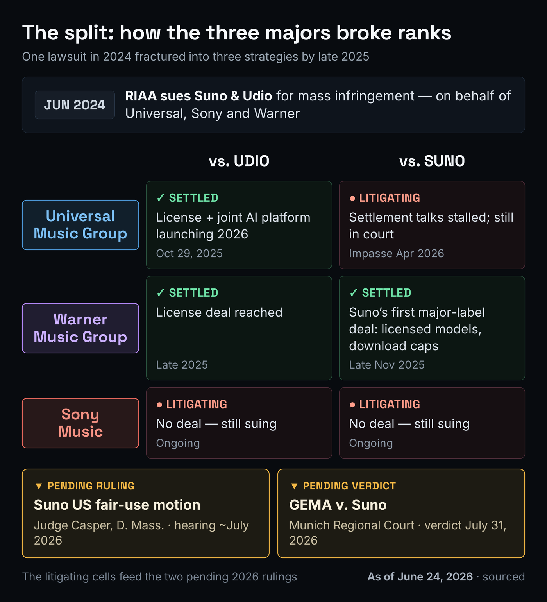
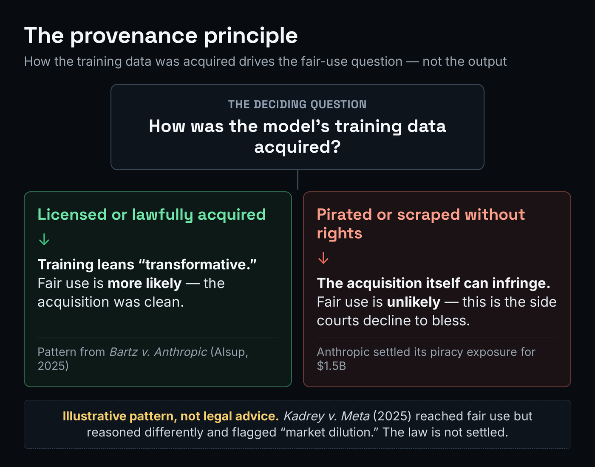
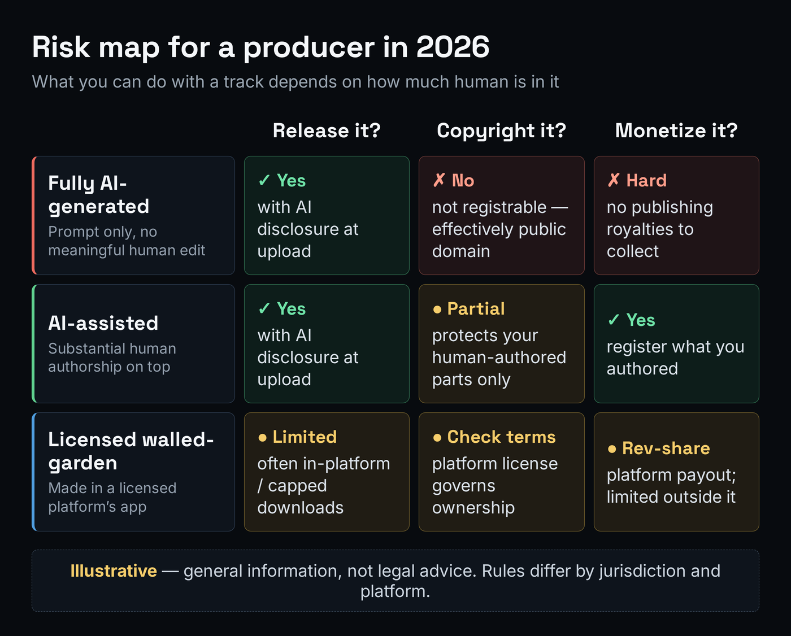

For two years the story producers heard about AI music was a courtroom story: the major labels had sued Suno and Udio, and the whole question of whether you could safely build a release on a generated track hung on who won. That story is over, and it ended in a way almost nobody predicted. The labels didn't kill AI music. They bought into it. Universal and Warner have signed licensing deals and are building products with the very companies they sued — and the messy, half-finished nature of that pivot is exactly what makes 2026 a riskier year for an independent producer than the headline "the labels settled" makes it sound. This page is the tracker for what actually happened, verified against the court and news record, and — the part the celebratory coverage skips — what it changes for the person who just wants to release a song.
This article links to MPW tools and to platforms, some of which are affiliate links. If you sign up through one we may earn a commission at no cost to you. It changes nothing about the analysis — the settlements, rulings and dates below are reported as they are, click or not.
The majors split. Udio settled with both Universal and Warner and is being rebuilt into a licensed "walled garden." Suno settled with Warner only; Universal is still suing it and Sony is suing both. The two rulings that decide the rest of the year land in July 2026: Suno's US fair-use motion (Judge Casper, D. Mass.) and the GEMA verdict in Munich. The pattern so far — set by Bartz v. Anthropic — is that training may be fair use, but where the training data came from (licensed vs. pirated) is the fight. And the settlements cover major-label catalogs only, which is why independents are the exposed party.
One honesty note before the depth. This is general information for producers, not legal advice, and this is the fastest-moving corner of music law right now — two of the facts below are scheduled to change in July 2026. We date every claim, separate what a court has decided from what is merely pending, and flag the genuinely unsettled questions as unsettled. For any real money decision involving rights, talk to a music attorney. With that said, here is the verified map.
What Changed in 2025–26: the Majors Split
Start with the case everything descends from. In June 2024 the RIAA, on behalf of Universal Music Group, Sony Music and Warner Music Group, sued Suno and Udio for "mass infringement" — the allegation being that the two generators had trained on millions of copyrighted recordings without authorization. For a year it looked like one unified front of three majors against two startups. Then, through late 2025, that front fractured into three different strategies, and the fracture is the single most important fact for a producer to understand, because the three majors now sit in three different places.

Universal moved first toward peace. On October 29, 2025 it settled with Udio — a compensatory settlement plus new recorded-music and publishing licenses, and an agreement to build a commercial "music creation, consumption and streaming" platform together, set to launch in 2026. Warner followed with its own Udio settlement soon after. Then, during Thanksgiving week in late November 2025, Warner settled with Suno too — Suno's first deal with a major label. So two of the three defendants-vs-startups pairings that mattered most had been converted into partnerships within a month.
But "the labels settled" is a half-truth that hides the live risk. Universal is still litigating against Suno — settlement talks between them reportedly hit an impasse in April 2026, and a separate fight has opened over whether Suno must disclose the terms of its Warner deal. Sony has settled with neither company and is still suing both Suno and Udio. So the real map is not "war, then peace." It is a checkerboard: some label-against-tool fights are now licenses, and others are still headed for a verdict. If you want the broader evergreen on how AI-music legality works underneath all this litigation, our hub on whether AI music is legal is the place that explains the mechanics this tracker assumes.
The Settlement Grid: Who Settled, Who's Still Fighting
It helps to see the settlement state as a grid rather than a story, because the grid is what tells you whether the tool you use sits behind a license or behind an open lawsuit. As of the date on this page, here is where each major stands with each generator.
| Major label | vs. Udio | vs. Suno |
|---|---|---|
| Universal (UMG) | Settled — Oct 29 2025 (license + joint platform) | Litigating — talks stalled Apr 2026 |
| Warner (WMG) | Settled — late 2025 (license) | Settled — late Nov 2025 (license) |
| Sony Music | Litigating | Litigating |
Two things jump out of that grid. First, the two generators ended up in very different shapes. Udio, which the industry always read as the more label-friendly of the two, is being rebuilt into a "walled garden": under its settlements it is pivoting from a make-a-finished-song-from-a-prompt service into a fan-engagement and remixing platform where creations are intended to stay inside the platform, and where public downloads of freshly generated songs have been paused. Suno, by contrast, gets to keep offering the thing it always offered — full songs from a text prompt — but under its Warner deal the 2026 changes are licensed models (its current models are slated to be deprecated when the licensed one launches), monthly download caps, and pay-to-download, with free-tier songs remaining playable and shareable but not downloadable. Industry observers read Suno as having gotten the better of the two deals because it didn't have to gut its core product. If you're weighing the two tools on capability rather than legal posture, our Suno vs. Udio comparison is the side-by-side.
Second — and this is the one that matters for risk — every one of these deals is opt-in for the labels' artists and songwriters, and every one of them covers only that label's catalog. A settlement between Universal and Udio does nothing for a song you wrote and distribute yourself. We come back to that gap below, because it is the whole independent-producer story. For the contractual mechanics of where a generator's commercial-use rights actually come from, AI music licensing explained is the companion read.
The Two Rulings That Decide 2026
The settlements bought peace where there's a license. Everywhere else, the unsettled question — is training on copyrighted music without permission lawful at all? — is still live, and two rulings in July 2026 will move it more than anything else this year.
The first is in the United States. Suno is refusing to settle the cases it hasn't settled and is fighting on fair use. In March 2026 its legal team filed a motion for summary judgment arguing that training an AI model on copyrighted recordings is transformative use under US copyright law. The motion sits before Judge Denise Casper in the District of Massachusetts, who has not ruled; a hearing is scheduled for July 2026. The stakes are blunt: if Suno wins on fair use, it undercuts the logic of every licensing deal that was just signed — why pay for what a court says is free? If Suno loses, the Universal–Udio licensing template becomes the de facto industry standard, and the unsettled cases get very expensive very quickly, because statutory copyright damages run up to $150,000 per infringed work and these training sets contain a great many works.
The second is in Germany, and it could be the first major European decision on the core question. GEMA, Germany's collecting society, sued Suno in the Munich Regional Court in January 2025, arguing that Suno trained on and reproduces protected compositions without a license. Oral proceedings wrapped in March 2026, where GEMA's counsel played AI outputs it says closely match world-famous songs — the six works in dispute include Forever Young, Atemlos, Mambo No. 5 and Daddy Cool. The court's verdict was originally set for June 12, 2026; on May 26 it was postponed to July 31, 2026 for internal administrative reasons (the court was explicit that the delay signals nothing about the outcome). That case follows the same Munich court's November 2025 win for GEMA against OpenAI, where the court held that "memorizing" works inside a model's parameters counts as reproduction and that Germany's text-and-data-mining exception did not cover it — a precedent that, if extended to Suno's music, would hand European rights holders real leverage.
One nuance worth keeping straight: a separate Munich local court held in February 2026 that an AI output generated from a prompt is not copyrightable in Germany, because the machine, not the human, made the essential expressive choices. That is the European cousin of the US human-authorship rule we get to below — and it cuts the same way for the person prompting the tool: generating a song doesn't make you its author.
The Provenance Principle: Licensed vs. Pirated
To predict how the unsettled cases might go, the most useful precedent isn't a music case at all — it's Bartz v. Anthropic, decided by Judge William Alsup of the Northern District of California on June 23, 2025. (Disclosure for transparency: Anthropic also makes the AI that powers some of this site's tools.) The authors in that case sued over books used to train a large language model, and the ruling split cleanly down a line that maps directly onto music: training a model on works the company had lawfully acquired was "quintessentially transformative" and therefore fair use — but downloading and keeping pirated copies from shadow libraries to build a permanent training library was not fair use, and remained infringing. Anthropic later settled the piracy exposure for a reported $1.5 billion. The lesson the whole industry took from it is a single sentence: the act of training may be defensible, but the way you got the data is a separate, overriding question.

That principle is exactly why provenance — not transformation — is the heart of the Suno and Udio fights. Nobody seriously disputes that a generated song sounds different from any single training track; the dispute is over how the training set was assembled and whether the company had the right to use it. It is also why the licensing deals matter beyond the cash: a model retrained on a licensed catalog is standing on the safe side of the Bartz line by construction, while a model trained on scraped or unlicensed material is standing on the side the courts have been least willing to bless.
Honesty requires one caveat here, because the law is not actually settled. Two days after Bartz, a different judge in the same district — Judge Chhabria in Kadrey v. Meta — reached fair use on training too, but reasoned differently and warned that the real battleground is "market dilution," not transformation, and that a stronger evidentiary record might have flipped the result. So even the friendly-to-AI precedents disagree about why, and a higher court or Congress may yet redraw the line. Treat the diagram above as the prevailing pattern, not a guarantee; for the doctrine underneath it, music copyright and fair use explained is the deeper dive.
What This Means for You
Here is the part competitors skip. None of the major-label peace treaties were signed on your behalf, so the practical questions for an independent producer in 2026 are unchanged in substance but sharper in stakes: can you release an AI track, can you protect it, and can you make money from it? The answer depends almost entirely on how much of a human is in the work.

On copyright, the rule is now well established and it is the single fact most likely to cost you money if you ignore it. In its January 29, 2025 report, the US Copyright Office affirmed that copyright requires human authorship and that purely AI-generated music — output produced from a prompt alone, with no meaningful human control over the expressive elements — is not registrable, and therefore effectively falls into the public domain. AI-assisted work can be protected, but only for the parts a human actually authored: the creative selection, arrangement and modification you bring to the AI's raw output, which you must disclose and disclaim when you register. (The federal courts back this up: the D.C. Circuit affirmed the human-authorship requirement in Thaler v. Perlmutter in March 2025.) The practical consequence is that an un-edited Suno export is something you can post but not really own or collect publishing royalties on — which limits monetization more than most producers realize. The two evergreens that work through this in detail are can you copyright Suno AI music and the broader can you copyright AI music; to estimate how much of a given track is human-authored enough to protect, the AI Copyright Strength tool gives you a defensible read.
On releasing and distributing, the gates tightened through 2025–26 and they now bite at the platform level regardless of where the lawsuits land. Spotify began carrying AI-use disclosures in song credits via the DDEX standard in its September 2025 policy update; Apple Music introduced Transparency Tags in March 2026; and some distributors went further — Believe and its subsidiary TuneCore began automatically blocking tracks they detect as coming from unlicensed generators in April 2026, which means an unlicensed tool's output can be ineligible for distribution through some channels while licensed tools pass. The honest move is to disclose the AI use at upload, every time: disclosed AI music is allowed and is not down-ranked for being AI, whereas an omitted disclosure reads as concealment and risks demonetization or removal. How to release AI music covers the distributor-by-distributor policies, how to distribute music handles the ordinary release mechanics, and the AI Music DDEX Disclosure Checker confirms the AI credit is actually carried in your delivery metadata rather than just ticked in a form.
On making money, the realistic picture is that durable AI-music revenue comes from the human-authored layer and from being correctly registered, not from volume of generated output. There is a forward-looking reason to get your paperwork right now: when licensed-AI payouts begin flowing — and the structure of the Universal–Udio and Warner deals suggests they will — the money is expected to route through registration records and market-share data, the same plumbing that already pays out streaming and performance royalties. The producers positioned to catch any of that are the ones whose catalogs are registered with their PRO with clean, accurate metadata before the payouts start. How to make money with AI music lays out which revenue paths are durable and which aren't, and how to copyright your music handles the registration side for whatever human authorship your tracks contain.
Independents and the Class-Action Gap
Now the gap that the settlement headlines paper over. The major-label deals settle claims for major-label catalogs. If you're an independent artist distributing through DistroKid, TuneCore, CD Baby or the like, and your recordings were swept into a training set, none of the Universal or Warner settlements compensate you or speak for you. That exposure is being litigated separately, in class actions — the lead one is Nguyen v. Suno, filed in the Northern District of California in November 2025 on behalf of a proposed class of independent musicians and small-label artists, with a parallel class action against Udio. Those cases exist precisely because the major settlements left a hole where every non-major rights holder used to stand.
The friction doesn't stop at the indie/major line, either. In early June 2026 the American Federation of Musicians sued Universal and Warner — not the AI companies, the labels — alleging that the labels took compensation and licensed substantial portions of their catalogs to the generators but refused to share the settlement money or the ongoing license revenue with the session musicians and performers whose work was actually fed into the models. In other words, even within the major-label world, the question of who gets paid when a recording is used to train an AI is unresolved and now itself in court. The throughline for an independent producer is sobering and simple: the people with the most leverage have made their deals, and almost everyone else is still arguing about the scraps. That's the case for protecting your own position deliberately rather than assuming the settlements covered you.
How to Protect Yourself Now
You don't need to predict the July rulings to act sensibly before them. Five moves put an independent producer on the safest available ground in 2026, whichever way the verdicts fall. Run them in order.
- Prefer tools trained on licensed data if you want to be safe. A model retrained on a licensed catalog sits on the defensible side of the Bartz provenance line; an unlicensed one carries both the legal cloud and a growing risk of being blocked at the distributor. This isn't a moral judgment on any tool — it's a risk posture. Check the tool's current licensing status before you build a release on it, because that status is moving (Suno's licensed model, for instance, was still rolling out as of mid-2026).
- Be honest about how much of the track is yours. Decide whether your recording is fully AI-generated or genuinely AI-assisted with a human as the primary creative force. That single distinction decides whether any of it is copyrightable and which distributors and royalty bodies will accept it — and the gatekeepers can increasingly detect the difference, so don't fudge it.
- Register your catalog with your PRO and keep clean metadata. When licensed-AI payouts route by registration and market share, the producers in line to receive anything are the ones already registered with accurate splits and metadata. Do this now; it can't be done retroactively for money that's already moved.
- Disclose the AI use at upload. Complete your distributor's AI-disclosure step so the credit is carried in the DDEX metadata Spotify and Apple read. Disclosed AI music is allowed; concealment is what gets tracks pulled. The AI Music DDEX Disclosure Checker verifies the credit actually made it into the delivery.
- Keep a provenance file. Save the tool and plan you used, the date, your prompts, and every human edit you made. If a platform or rights holder ever questions a track, that file is your evidence. To pressure-test where a planned release sits across the rights gates before you ship it, the AI Music Rights Navigator walks them interactively.
Before You Release: Three Checks
Run these three checks before your next AI-assisted release and you'll catch the problems that get tracks pulled or left un-monetized — while they're still cheap to fix.
- Answer one question in writing: is this track fully AI-generated (a prompt with no meaningful human edit), AI-assisted with you as the primary creative force, or made inside a licensed walled-garden platform?
- From that answer, state the three consequences out loud: can you release it, can you copyright it, and can you monetize it? Use the risk map above — fully-AI is releasable but not registrable, AI-assisted protects your human parts, licensed-platform is safe on rights but limited on distribution.
- Stress-test it honestly: if you only changed a word in the prompt and re-rolled, that's still “fully AI-generated” for copyright purposes. Re-classify until the label is one you could defend to a registrar.
- Open a single document and record five things: the tool and model version you used, its current licensing status, the date, your prompts, and every human edit you made after the generation.
- Note why the licensing status matters by pinning it to the provenance principle: a licensed-data model sits on the defensible side of the Bartz line, an unlicensed one does not.
- Confirm the track doesn't reproduce a protected composition or master you don't have rights to — provenance protects your acquisition story, not someone else's melody.
- Take a real track you intend to release and check the copyright gate: register the human-authored elements with your PRO and accurate splits, and disclaim the AI-generated parts.
- Check the distribution gate: is your generator one your distributor still accepts, and have you completed the AI-disclosure step? Walk the whole release interactively with the AI Music Rights Navigator.
- Verify the metadata gate: run the delivery through the AI Music DDEX Disclosure Checker to confirm the AI credit is actually carried in the DDEX metadata rather than just ticked in a form — then file the result in your provenance document.
Where the Law Stands — as of June 24, 2026 (refreshable)
Decided: Universal–Udio settlement (Oct 2025); Warner–Udio and Warner–Suno settlements (late 2025); Bartz v. Anthropic US fair-use/piracy split (Jun 2025) and its $1.5B settlement; GEMA’s German win against OpenAI (Nov 2025); the US Copyright Office human-authorship rule (Jan 2025). Pending, not yet decided: Suno’s US fair-use summary-judgment motion (Judge Casper, D. Mass., hearing July 2026); the GEMA v. Suno verdict in Munich, scheduled July 31, 2026; Universal’s and Sony’s ongoing cases against Suno; Sony’s case against Udio; the Nguyen v. Suno indie class action; the AFM suit against Universal and Warner. A pending case is not a result — treat each "pending" line as a question, not an answer.
The most important honesty in a tracker like this is to keep "what a court did" strictly separate from "what a court might do." As of the date above, the pivotal merits question — is unlicensed training on copyrighted music lawful? — has not been answered by a final US ruling, and the German answer is days away rather than in hand. The direction of travel is readable: rights holders are winning on the provenance point, and the smart money is migrating from lawsuits to licenses. But "readable direction" is not "settled law," and a producer who bets a release on a pending verdict is gambling. This section is built to be re-dated: when the Munich verdict reads on July 31, 2026 and when Judge Casper rules, this page leads with the outcome and the snapshot above moves those lines from "pending" to "decided."
Frequently Asked Questions
Both are legal to use, and both are operating. What changed is their footing with the labels. Udio settled with Universal and Warner and is being rebuilt into a licensed, walled-garden platform. Suno settled with Warner but is still being sued by Universal and Sony, and is fighting those cases on fair use, with a key US hearing scheduled for July 2026 and a German (GEMA) verdict due July 31, 2026. Using the tools is not the legal question; what you do with the output — whether you can own it, distribute it and monetize it — is, and that depends on your tool's licensing status and how much human authorship is in your track.
You can sell it, but read the fine print on two things. First, commercial-use rights come from your generator's terms, and on most tools those rights attach only to paid-tier output — confirm you actually hold them. Second, a purely AI-generated track is not copyrightable in the US, so you can't register it or collect publishing royalties on the AI-generated parts; only the human-authored layer is protectable. Disclose the AI use at upload, prefer a tool trained on licensed data, and keep the parts you actually authored documented. How to make money with AI music covers which revenue paths are durable.
Partly — it's a checkerboard, not a clean peace. Universal settled with Udio (October 2025) but is still litigating against Suno. Warner settled with both Udio and Suno (late 2025). Sony has settled with neither and is suing both. So whether "the labels settled" is true depends entirely on which label and which tool you mean, which is exactly why the safe path for an independent doesn't rest on any of these deals.
GEMA, Germany's music collecting society, sued Suno in the Munich Regional Court in January 2025, arguing Suno trained on and reproduces protected compositions without a license, using six well-known songs as examples. Oral proceedings finished in March 2026. The verdict was moved from June 12 to July 31, 2026 for administrative reasons. It matters because it could be the first major European ruling on whether AI platforms must license the music they train on, and it follows the same court's November 2025 win for GEMA against OpenAI. As of this writing the verdict has not been delivered.
In June 2025 Judge Alsup (N.D. Cal.) held that training an AI on lawfully acquired works was transformative fair use, but that downloading and keeping pirated copies to build a training library was not fair use and remained infringing. Anthropic later settled the piracy exposure for a reported $1.5 billion. It matters for music because it set the pattern the Suno and Udio fights turn on: training may be defensible, but the provenance of the data — licensed vs. pirated — is a separate, decisive question. A companion case (Kadrey v. Meta) reasoned differently, so the law isn't fully settled.
No. The major-label settlements cover major-label catalogs only. If you're an independent distributing through DistroKid, TuneCore or CD Baby, no Universal or Warner deal compensates you or speaks for you. That gap is being litigated separately in class actions — the lead one is Nguyen v. Suno (N.D. Cal., November 2025), with a parallel Udio class. Your best protection is your own: register with your PRO, keep clean metadata, disclose AI use, prefer licensed tools, and keep a provenance file.
Not the purely AI-generated parts. The US Copyright Office affirmed in January 2025 that copyright requires human authorship and that output produced from a prompt alone, without meaningful human control of the expressive elements, is not registrable — effectively public domain. You can protect the human-authored layer of an AI-assisted track: your creative selection, arrangement and modification of the output, which you disclose and disclaim when registering. The detail is in can you copyright Suno AI music, and the AI Copyright Strength tool estimates how protectable a given track is.
No. This is general information to help producers understand a fast-moving situation, current as of June 24, 2026; it is not legal advice and does not create an attorney–client relationship. Two of the facts here are scheduled to change in July 2026, and copyright and right-of-publicity questions are fact-specific. For any decision that involves real money or a real person's rights, consult a qualified music attorney in your jurisdiction.